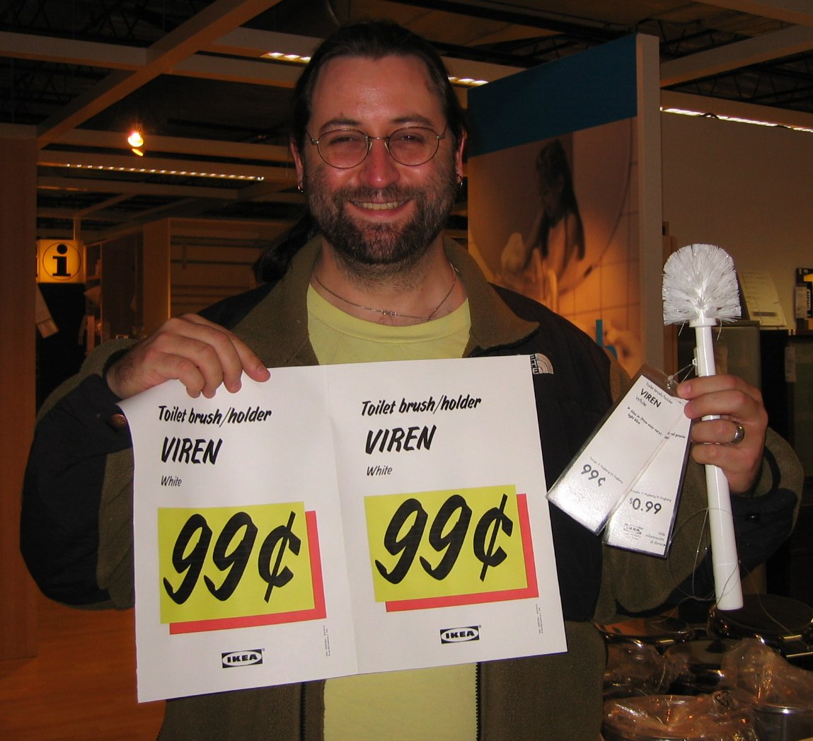

About Face
Hello.

In society, I am paid to conduct research in experimental neutrino physics by Brookhaven National Lab as part of the Electronic Detector Group in the Physics Department. What you may read here are my own representations. Financial considerations aside, I also happen to enjoy this activity particularly as it pertains to developing and applying various computing software and hardware tools.
The challenges these tools pose are interesting to me in their own right but my underlying motivation is to help bring us more fundamental understanding of our universe. And toward that end neutrinos provide sharp though even challenging tools.
My contributions to this combination to turning bytes into neutrinos may be roughly categorized as:
- offline software
- The center of this effort is in EDG’s subgroup known as Wire-Cell and expressions in the form of suites of simulation, data processing and reconstruction software in prototype and toolkit form. More broadly I am involved in general offline software ecosystems including that for DUNE.
- machine learning
- I started and continue to participate in development of a novel “artificial intelligence / machine learning” technique which we have named LS4GAN. It is a method to strike at a core AI/ML problem: training a network on simulated data while applying it to perform inference on data from real detectors all the while knowing that these are two different data domains.
- online software
- I contribute to development of data acquisition software for the DUNE experiment particularly in the area of configuration management with my moo schema based code generator playing an important role.
Throughout this web site you may find blog posts or longer articles that give details on these and other activities. More meta details may be found in the about this site page.